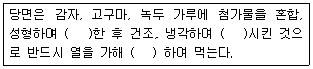
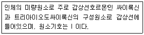
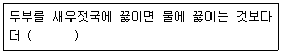
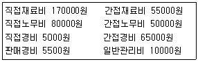

한식조리기능사 (2013-10-12 기출문제)
1과목: 식품위생 및 법규
1. 육류의 부패 과정에서 pH가 약간 저하되었다가 다시 상승하는데 관계하는 것은?
- 암모니아
- 비타민
- 글리코겐
- 지방
(정답률: 59%)

2. 히스타민 함량이 많아 가장 알레르기성 식중독을 일으키기 쉬운 어육은?
- 넙치
- 대구
- 가다랑어
- 도미
(정답률: 75%)
3. 빵을 비롯한 밀가루제품에서 밀가루를 부풀게 하여 적당한 형태를 갖추게 하기 위해 사용되는 첨가물은?
- 팽창제
- 유화제
- 피막제
- 산화방지제
(정답률: 91%)
4. 황색포도상구균에 의한 독소형 식중독과 관계되는 독소는?
- 장독소
- 간독소
- 혈독소
- 암독소
(정답률: 88%)
5. 곰팡이에 의해 생성되는 독소가 아닌 것은?
- 아플라톡신
- 시트리닌
- 엔트로톡신
- 파툴린
(정답률: 51%)
6. 열경화성 합성수지제 용기의 용출시험에서 가장 문제가 되는 유독 물질은?
- 메탄올
- 아질산염
- 포름알데히드
- 연단
(정답률: 63%)
7. 동물성 식품에서 유래하는 식중독 유발 유독성분은?
- 아마니타톡신
- 솔라닌
- 베네루핀
- 시큐톡신
(정답률: 58%)
8. 사용목적별 식품첨가물의 연결이 틀린 것은?
- 착색료: 철클로로필린나트륨
- 소포제: 초산비닐수지
- 표백제: 메타중아황산칼륨
- 감미료: 삭카린나트륨
(정답률: 59%)
9. 식품취급자가 손을 씻는 방법으로 적합하지 않은 것은?
- 살균효과를 증대시키기 위해 역성비누액에 일반 비누액을 섞어 사용한다.
- 팔에서 손으로 씻어 내려온다.
- 손을 씻은 후 비눗물을 흐르는 물에 충분히 씻는다.
- 역성비누원액을 몇 방울 손에 받아 30초 이상 문지르고 흐르는 물로 씻는다.
(정답률: 81%)
10. 사시, 동공확대, 언어장해 등 특유의 신경마비증상을 나타내며 비교적 높은 치사율을 보이는 식중독 원인균은?
- 황색 포도상구균
- 클로스트리디움 보툴리늄균
- 병원성 대장균
- 바실러스 세레우스균
(정답률: 82%)
11. 식품 등의 표시기준에 의해 표시해야 하는 대상성분이 아닌 것은?
- 나트륨
- 지방
- 열량
- 칼슘
(정답률: 70%)
12. 식품 등을 판매하거나 판매할 목적으로 취급할 수 있는 것은?
- 병을 일으키는 미생물에 오염되었거나 그 염려가 있어 인체의 건강을 해칠 우려가 있는 식품
- 포장에 표시된 내용량에 비하여 중량이 부족한 식품
- 영업의 신고를 하여야 하는 경우에 신고하지 아니한 자가 제조한 식품
- 썩거나 상하거나 설익어서 인체의 건강을 해칠 우려가 있는 식품
(정답률: 77%)
13. 식품공정상 표준온도라 함은 몇〫 ℃ 인가?
- 5℃
- 10℃
- 15℃
- 20℃
(정답률: 58%)
14. 다음 영업의 종류 중 식품접객업이 아닌 것은?
- 보건복지부령이 정하는 식품을 제조, 가공 업소 내에서 직접 최종소비자에게 판매하는 영업
- 음식류를 조리, 판매하는 영업으로서 식사와 함께 부수적으로 음주행위가 허용되는 영업
- 집단급식소를 설치, 운영하는 자와의 계약에 의하여 그 집단급식소 내에서 음식류를 조리하여 제공하는 영업
- 주로 주류를 판매하는 영업으로서 유흥종사자를 두거나 유흥시설을 설치할 수 있고 노래를 부르거나 춤을 추는 행위가 허용되는 영업
(정답률: 41%)
15. 식품위생법상 조리사가 면허취소 처분을 받은 경우 반납하여야 할 기간은?
- 지체 없이
- 5일
- 7일
- 15일
(정답률: 75%)
2과목: 식품학
16. 필수아미노산만으로 짝지어진 것은?
- 트립토판, 메티오닌
- 트립토판, 글리신
- 라이신, 글루타민산
- 루신, 알라닌
(정답률: 52%)
17. 과실 주스에 설탕을 섞은 농축액 음료수는?
- 탄산음료
- 스쿼시
- 시럽
- 젤리
(정답률: 65%)
18. 신선한 생육의 환원형 미오글로빈이 공기와 접촉하면 분자상의 산소와 결합하여 옥시미오글로빈으로 되는데 이때의 색은?
- 어두운 적자색
- 선명한 적색
- 어두운 회갈색
- 선명한 분홍색
(정답률: 56%)
19. 다음 물질 중 동물성 색소는?
- 클로로필
- 플라보노이드
- 헤모글로빈
- 안토잔틴
(정답률: 78%)
20. 천연 산화방지제가 아닌 것은?
- 아스코르브산
- 안식향산
- 토코페롤
- BHT
(정답률: 49%)
21. 감자는 껍질을 벗겨 두면 색이 변화되는데 이를 막기 위한 방법은?
- 물에 담근다.
- 냉장고에 보관한다.
- 냉동시킨다.
- 공기 중에 방치한다.
(정답률: 89%)
22. 다음 보기 내용의 ( )안에 알맞은 용어가 순서대로 나열된 것은?

- α화 - β화 - α화
- α화 - α화 - β화
- β화 - β화 - α화
- β화 - α화 - β화
(정답률: 74%)
23. 대두에 관한 설명으로 틀린 것은?
- 콩 단백질의 주요 성분인 글리시닌은 글로불린에 속한다.
- 아미노산의 조성은 메티오닌, 시스테인이 많고 라이신, 트립토판이 적다.
- 날콩에는 트립신 저해제가 함유되어 생식할 경우 단백질 효율을 저하시킨다.
- 두유에 염화마그네슘이나 탄산칼슘을 첨가하여 단백질을 응고시킨 것이 두부이다.
(정답률: 43%)
24. 적자색 양배추를 채 썰어 물에 장시간 담가두었더니 탈색되었다. 이 현상의 원인이 되는 색소와 그 성질을 바르게 연결한 것은?
- 안토시아닌계 색소 - 수용성
- 플라보노이드계 색소 - 지용성
- 헴계 색소 - 수용성
- 클로로필계 색소 - 지용성
(정답률: 81%)
25. 다음 보기에서 설명하는 영양소는?

- 요오드
- 철
- 마그네슘
- 셀레늄
(정답률: 88%)
26. 전분에 대한 설명으로 틀린 것은?
- 아밀로오즈와 아밀로펙틴의 비율이 2:8 이다.
- 식혜, 엿은 전분의 효소 작용을 이용한 식품이다.
- 동물성 탄수화물로 열량을 공급한다.
- 가열하면 팽윤되어 점성을 갖는다.
(정답률: 66%)
27. 박력분에 대한 설명 중 옳은 것은?
- 마카로니 제조에 쓰인다.
- 우동 제조에 쓰인다.
- 단백질 함량이 9% 이하이다.
- 글루텐의 탄력성과 점성이 강하다.
(정답률: 60%)
28. 돼지의 지방조직을 가공하여 만든 것은?
- 헤드치즈
- 라드
- 젤라틴
- 쇼트닝
(정답률: 58%)
29. 달걀을 삶은 직후 찬물에 넣어 식히면 노른자 주위의 암녹색의 황화철이 적게 생기는데 그 이유는?
- 찬물이 스며들어가 황을 희석시키기 때문
- 황화수소가 난각을 통하여 외부로 발산되기 때문
- 찬물이 스며들어가 철분을 희석하기 때문
- 외부의 기압이 낮아 황과 철분이 외부로 빠져 나오기 때문
(정답률: 55%)
30. 고등어 100g당 단백질량이 20g, 지방량이 14g이라 할 때 고등어 150g의 단백질량과 지방량의 합은?
- 34g
- 51g
- 54g
- 68g
(정답률: 60%)
3과목: 조리이론과 원가계산
31. 급식시설 종류별 단체급식의 목적으로 틀린 것은?
- 학교급식 - 심신의 건전한 발달과 올바른 식습관형성
- 군대급식 - 체력 및 건강증진으로 체력단련 유도
- 사회복지시설 - 작업능률을 높이고, 효과적인 생산성의 향상
- 병원급식 - 환자상태에 따라 특별식을 급식하여 질병 치료나 증상 회복을 촉진
(정답률: 74%)
32. 전자레인지의 주된 조리 원리는?
- 복사
- 전도
- 대류
- 초단파
(정답률: 88%)
33. 달걀의 이용이 바르게 연결된 것은?
- 농후제 - 크로켓
- 결합제 - 만두속
- 팽창제 - 커스터드
- 유화제 - 푸딩
(정답률: 51%)
34. 달걀 삶기에 대한 설명 중 틀린 것은?
- 달걀을 완숙하려면 98 ~ 100℃의 온도에서 12분 정도 삶아야 한다.
- 삶은 달걀을 냉수에 즉시 담그면 부피가 수축하여 난각과의 공간이 생기므로 껍질이 잘 벗겨진다.
- 달걀을 오래 삶으면 난황 주위에 생기는 황화수소는 녹색이며 이로 인해 녹변이 된다.
- 달걀은 70℃ 이상의 온도에서 난황과 난백이 모두 응고한다.
(정답률: 44%)
35. 식품조리의 목적과 가장 거리가 먼 것은?
- 식품이 지니고 있는 영양소 손실을 최대한 적게 하기 위해
- 각 식품의 성분이 잘 조화되어 풍미를 돋구게 하기 위해
- 외관상으로 식욕을 자극하기 위해
- 질병을 예방하고 치료하기 위해
(정답률: 78%)
36. 식품구입시의 감별방법으로 틀린 것은?
- 육류가공품인 소시지의 색은 담홍색이며 탄력성이 없는 것
- 밀가루는 잘 건조되고 덩어리가 없으며 냄새가 없는 것
- 감자는 굵고 상처가 없으며 발아되지 않은 것
- 생선은 탄력이 있고 아가미는 선홍색이며 눈알이 맑은 것
(정답률: 87%)
37. 감자 150g을 고구마로 대체하려면 고구마 약 몇g이 있어야 하는가? (단, 당질 함량은 100g 당 감자 15g, 고구마 32g)
- 21g
- 44g
- 66g
- 70g
(정답률: 42%)
38. 과일이 성숙함에 따라 일어나는 성분변화가 아닌 것은?
- 과육은 점차로 연해진다.
- 엽록소가 분해되면서 푸른색은 옅어진다.
- 비타민C와 카로틴 함량이 증가한다.
- 탄닌은 증가한다.
(정답률: 56%)
39. 마요네즈가 분리되는 경우가 아닌 것은?
- 기름의 양이 많았을 때
- 기름을 첨가하고 천천히 저어주었을 때
- 기름의 온도가 너무 낮을 때
- 신선한 마요네즈를 조금 첨가했을 때
(정답률: 68%)
40. 일반적으로 젤라틴이 사용되지 않는 것은?
- 양갱
- 아이스크림
- 마시멜로우
- 족편
(정답률: 58%)
41. 일반적으로 맛있게 지어진 밥은 쌀 무게의 약 몇 배 정도의 물을 흡수하는가?
- 1.2 ~ 1.4배
- 2.2 ~ 2.4배
- 3.2 ~ 4.4배
- 4.2 ~ 5.4배
(정답률: 72%)
42. 일반적으로 생선의 맛이 좋아지는 시기는?
- 산란기 몇 개월 전
- 산란기 때
- 산란기 직후
- 산란기 몇 개월 후
(정답률: 57%)
43. 다음 식품 중 직접 가열하는 급속해동법이 많이 이용되는 것은?
- 생선
- 소고기
- 냉동피자
- 닭고기
(정답률: 86%)
44. 다음 보기의 ( ) 안에 알맞은 말은?

- 단단해진다.
- 부드러워진다.
- 구멍이 많이 생긴다.
- 색깔이 하얗게 된다.
(정답률: 65%)
45. 식미에 긴장감을 주고 식욕을 증진시키며 살균작용을 돕는 매운맛 성분의 연결이 틀린 것은?
- 마늘 - 알리신
- 생강 - 진저롤
- 산초 - 호박산
- 고추 - 캡사이신
(정답률: 86%)
46. 닭튀김을 하였을 때 살코기 색이 분홍색을 나타내는 것은?
- 변질된 닭이므로 먹지 못한다.
- 병에 걸린 닭이므로 먹어서는 안 된다.
- 근육성분의 화학적 반응이므로 먹어도 된다.
- 닭의 크기가 클수록 분홍색 변화가 심하다.
(정답률: 83%)
47. 오이피클 제조 시 오이의 녹색이 녹갈색으로 변하는 이유는?
- 클로로필리드가 생겨서
- 클로로필린이 생겨서
- 페오피틴이 생겨서
- 잔토필이 생겨서
(정답률: 47%)
48. 표준조리레시피를 만들 때 포함되어야 할 사항이 아닌 것은?
- 메뉴명
- 조리시간
- 1일 단가
- 조리방법
(정답률: 84%)
49. 매월 고정적으로 포함해야 하는 경비는?
- 지급운임
- 감가상각비
- 복리후생비
- 수당
(정답률: 62%)
50. 다음 자료에 의해서 총원가를 산출하면 얼마인가?

- 425000원
- 43⑤00원
- 435000원
- 44⑤00 원
(정답률: 47%)
4과목: 공중보건
51. 감염병과 주요한 감염경로의 연결이 틀린 것은?
- 공기 감염 – 폴리오
- 직접 접촉감염 - 성병
- 비말 감염 - 홍역
- 절지동물 매개 - 황열
(정답률: 58%)
52. 인공능동면역에 의하여 면역력이 강하게 형성되는 감염병은?
- 이질
- 말라리아
- 폴리오
- 폐렴
(정답률: 61%)
53. 하수처리방법 중에서 처리의 부산물로 메탄가스 발생이 많은 것은?
- 활성오니법
- 살수여상법
- 혐기성처리법
- 산화지법
(정답률: 59%)
54. 곤충을 매개로 간접전파되는 감염병과 가장 거리가 먼 것은?
- 재귀열
- 말라리아
- 인플루엔자
- 쯔쯔가무시병
(정답률: 73%)
55. DPT 예방접종과 관계없는 감염병은?
- 페스트
- 디프테리아
- 백일해
- 파상풍
(정답률: 75%)
56. 미생물에 대한 살균력이 가장 큰 것은?
- 적외선
- 가시광선
- 자외선
- 라디오파
(정답률: 73%)
57. 군집독의 가장 큰 원인은?
- 실내 공기의 이화학적 조성의 변화 때문이다.
- 실내의 생물학적 변화 때문이다.
- 실내공기 중 산소의 부족 때문이다.
- 실내기온이 증가하여 너무 덥기 때문이다.
(정답률: 58%)
58. 영아사망률을 나타낸 것으로 옮은 것은?
- 1년간 출생수 1000명당 생후 7일 미만의 사망수
- 1년간 출생수 1000명당 생후 1개월 미만의 사망수
- 1년간 출생수 1000명당 생후 1년 미만의 사망수
- 1년간 출생수 1000명당 전체 사망수
(정답률: 67%)
59. 예방접종이 감염병 관리상 갖는 의미는?
- 병원소의 제거
- 감염원의 제거
- 환경의 관리
- 감수성 숙주의 관리
(정답률: 57%)
60. 우리나라에서 사회보험에 해당되지 않는 것은?
- 생명보험
- 국민연금
- 고용보험
- 건강보험
(정답률: 78%)